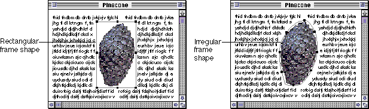
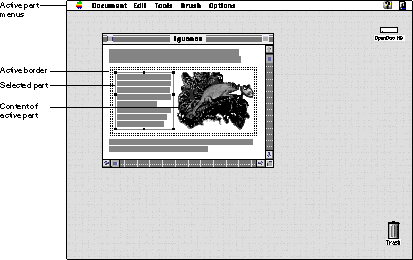
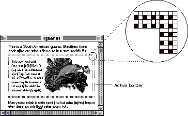
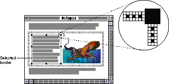
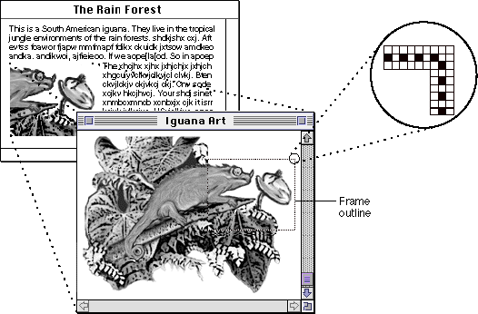
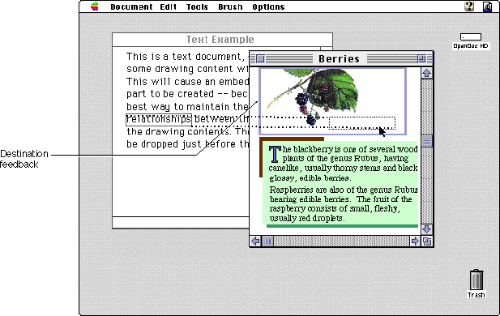

Frame Shapes and Borders
A frame is the structure in which a part's content appears in a document. All or a portion of a part's content may be visible in a frame. The user can alter a part's content when it is viewed in a frame. A frame's shape defines the area available for displaying the part's content.Frame Shape
Frames are usually rectangular, though your part editor can support alternative frame shapes depending on its content. For example, a button part might have a rounded rectangle frame shape. Some part editors may allow the user to change the frame shape through direct manipulation. Other part editors may provide indirect methods via a menu or dialog box. Your part editor is not required to allow users to change frame shapes. Figure 12-15 shows an example of a rectangular frame and an irregularly shaped frame containing the same content.Figure 12-15 Two possible frame shapes for the same part

In all cases, the containing part controls the size and shape of the frames of its embedded parts. Therefore, although a part editor can request a frame of a certain size and shape, it must accept the frame it is given by its containing part.When a user opens a frame into a part window (see "Viewing Embedded Parts in Part Windows"
Active Frame Border
The active part is the part with which the user is interacting. The active part has the selection focus, and only one frame of one part is active at any given time. OpenDoc alerts the user to this active state by displaying the active frame border around a frame (the active frame) of the active part. If there is a selection, it is always contained within the active part. Figure 12-16 shows an active graphics part with the active frame border around its frame. The active part's menus appear in the menu bar. Note that this part contains an embedded text part that is selected.Figure 12-16 Active part with the active frame border

Figure 12-17 shows the active frame border in detail. The border is 4 pixels wide and 25 percent gray, drawn with a dithered black-and-white pattern as shown.Figure 12-17 An active frame border

OpenDoc draws the active frame border. However, if your part contains the active part, your part may need to modify the active frame border's clipping to account for obscured content, as described in the section "Adjusting the Active Frame Border".If the active part is the root part, OpenDoc does not draw the active frame border because the active window frame itself provides the needed indication.
Inactive Frame (No Border)
When a user clicks in the content of an inactive frame to activate it, the previously active frame becomes inactive. OpenDoc then removes the active frame border from the previously active frame and displays the active frame border around the newly active frame. (The two frames involved may belong to two separate parts, or they may be two display frames of the same part.)Clicking in the menu bar, scroll bar, tool bar or other user interface element does not deactivate a frame. Only a click in another frame deactivates a frame and activates a new one.
Just because a frame is inactive does not mean that its part editor isn't running. Parts can run even if they have an icon view type (although parts in icon view type cannot become active). Parts may execute asynchronously whether they are active or inactive. Multiple parts within an OpenDoc document can be performing different tasks at the same time. For example, imagine that a user embeds a movie part, a text part, and a database query part into a document. The user can edit the text (the active part) while the movie continues to play and a query runs in the background.
Selected Frame Border
When a part's frame is selected, the entire content of the part--as viewed in that frame--is considered to be selected. The user can manipulate the part's frame and perform data-interchange operations on the part. The shape of the selected frame border typically corresponds to the frame shape, even when the content is irregularly shaped. Figure 12-18 shows the appearance of a selected frame border in detail. The border is 3 pixels wide and 16.7 percent gray, drawn with a dithered black-and-white pattern as shown.Figure 12-18 A selected frame border

The containing part draws the selected frame border. Draw a border of connecting dithered black-and-white lines 1 pixel in width. You can add resize handles, 5 pixels square, if your part allows the user to resize the frame. The border serves as the visual boundary where the pointer changes shape as it moves in and out of selected parts. For information on using different pointers, see the section "Pointers".In most cases, your containing part should provide eight selection handles for rectangular frames. The number of selection handles you provide depends on how many degrees of freedom your part can provide for resizing embedded frames. For more information on selection handles and resizing a selection, see the section "Resizing Selected Frames".
The frame of an embedded part is considered to be a content element of its containing part. The selection appearance of embedded frames should therefore be consistent with the selection appearance of the containing part's intrinsic content. This guideline is described further in"Making a Range Selection"
(Parts can also be selected while in icon view; see "Selected Icon Appearance".)
Frame Outline (in Part Window)
If, as described in the section "Edit Menu", your part includes the optional Show Frame Outline command in the Edit menu when your part has been opened into a part window, your part needs to be able to draw a frame outline in that part window. The outline denotes the content currently displayed in your part's source frame (the frame in the document window from which the part window was opened).When the user chooses Show Frame Outline from the Edit menu, you display a 1-pixel-wide black-and-white border around the frame location in terms of your part content. The border has the same appearance as the selected frame border, except that it has no resize handles. You then handle user actions as described in the section "Repositioning Content in a Frame" shows an example of the frame outline appearance.
Figure 12-19 Border appearance for a frame outline in a part window

Destination Feedback (for Drag and Drop)
OpenDoc parts should support drag and drop. Human interface guidelines for drag and drop are described in the section "Using Drag and Drop".If the pointer enters your part and your part can accept the data that the user is dragging, your part should display destination feedback to notify the user that your part is an eligible drop target.
For a part displayed as a frame, destination feedback is a highlighting of the frame border. Draw the highlighting on the inside of the active shape. (By contrast, OpenDoc draws the active frame border outside of the active shape.) If your target is in icon view type, highlight it.
Destination feedback is a 2-pixel-wide outline in the window color (set by the user in the Color control panel). Figure 12-20 shows the destination feedback of an embedded graphics part, indicating that the content, if dropped, will be embedded in or incorporated into that part.
Figure 12-20 Destination feedback
